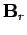
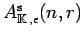
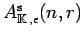
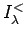

Let us briefly recall what we have done so far. With respect to the
proof that  is a basis, we have reduced the fact that it is a set
of generators
in section 8 to the verification of Proposition
8.1, which we just have completed.
Further we already know from section 6
that the axiom of a cellular coalgebra
is valid. It remains to show axiom
 and the fact that is linearly independent.
and the fact that is linearly independent.
Let us start with the latter task. It is clearly enough to
consider the case where
.
Let
be the field of fractions on and let  be the
image of
be the
image of  under the embedding of into
.
Any relation among elements of
with coefficients from is a relation
with coefficients from the field
too.
Thus, we only have to show
.
Now,
 is the centralizer
coalgebra of the algebra
under the embedding of into
.
Any relation among elements of
with coefficients from is a relation
with coefficients from the field
too.
Thus, we only have to show
.
Now,
 is the centralizer
coalgebra of the algebra
 generated by the endomorphisms
generated by the endomorphisms
 and
and  acting on
acting on
 in the sense of [O2, Section 2].
Consequently, by the comparison theorem [O2, Theorem 3.3]
the dimension in question is the same as the dimension of the
centralizer algebra of
in the sense of [O2, Section 2].
Consequently, by the comparison theorem [O2, Theorem 3.3]
the dimension in question is the same as the dimension of the
centralizer algebra of
 acting on
acting on
 .
.
The latter dimension
can be deduced from well-known results from the theory of quantum groups.
We will use [CP, Theorem 10.2.5 ii, second statement].
The operator called
there equals our
thus
. The application of the theorem
shows that the centralizer of our algebra
 is identical to the
image of the quantized universal enveloping algebra (QUE) corresponding to
the Dynkin diagram under its action on
is identical to the
image of the quantized universal enveloping algebra (QUE) corresponding to
the Dynkin diagram under its action on
 .
Now, by [CP, Proposition 10.1.13 and Theorem 10.1.14],
the tensor space
.
Now, by [CP, Proposition 10.1.13 and Theorem 10.1.14],
the tensor space
 decomposes into irreducibles as a QUE-module because
is
transcendental over
.
These irreducibles are indexed
by the highest weights of the symplectic group and their
dimensions are the same as in the classical case.
The weights occurring are the same as for the
symplectic group as well and correspond precisely to the elements of the
set
decomposes into irreducibles as a QUE-module because
is
transcendental over
.
These irreducibles are indexed
by the highest weights of the symplectic group and their
dimensions are the same as in the classical case.
The weights occurring are the same as for the
symplectic group as well and correspond precisely to the elements of the
set  from the definition of (cf. [O2, 7.1]).
It follows from work of R.C. King that the dimensions of the irreducibles are
just
([Ki],cf. [Do2]).
Consequently, we obtain the required identity:
from the definition of (cf. [O2, 7.1]).
It follows from work of R.C. King that the dimensions of the irreducibles are
just
([Ki],cf. [Do2]).
Consequently, we obtain the required identity:
We now verify axiom  .
We abbreviate
. Let
where
and
. As is grouplike and
.
We abbreviate
. Let
where
and
. As is grouplike and
 a homomorphism of algebras we calculate using
(20) that
a homomorphism of algebras we calculate using
(20) that
Here, as in section 11,
 is the set of multi-indices that are
 -column-standard with respect to the usual order
-column-standard with respect to the usual order  on
on
 (see section 8). Now, according to the straightening
formula 8.1
(after application of )
to each
and
there is an element
(unique by the
linear independence of ) such that
(see section 8). Now, according to the straightening
formula 8.1
(after application of )
to each
and
there is an element
(unique by the
linear independence of ) such that
We set
and obtain
This completes the verification of axiom  and hence the proof of
Theorem 7.1.
and hence the proof of
Theorem 7.1.